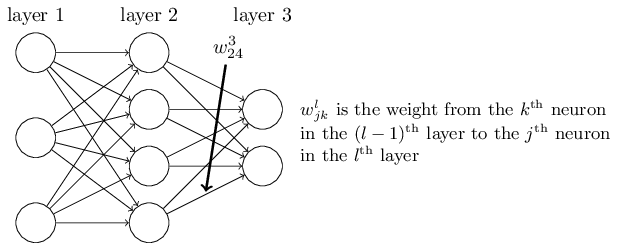

神经网络 Neural Networks
人工神经网络是由大量处理单元互联组成的非线性、自适应信息处理系统。它是在现代神经科学研究成果的基础上提出的，试图通过模拟大脑神经网络处理、记忆信息的方式进行信息处理。
神经元

这个“神经元”是一个以 $x_1,x_2,x_3$ 及截距 $ +1 $ 为输入值的运算单元，其输出为 $ h_{W,b}(x) = f(W^Tx) = f(\sum_{i=1}^3 W_{i}x_i +b)$ ，其中函数 $ f : \Re \mapsto \Re$ 被称为“激活函数”。在本教程中，我们选用sigmoid函数作为激活函数 $ f(\cdot) $:
$$
f(z) = \frac{1}{1+\exp(-z)}.
$$
神经网络模型
所谓神经网络就是将许多个单一“神经元”联结在一起，这样，一个“神经元”的输出就可以是另一个“神经元”的输入。例如，下图就是一个简单的神经网络：

我们使用 $ w^l_{jk} $ 表示从 $(l−1)^{th}$ 层的 $k^{th} $个神经元到 $l^{th} $ 层的 $j^{th} $ 个神经元的链接上的权重。使用 $b^l_j$ 表示在 $l^{th}$ 层第 $j^{th} $ 个神经元的偏置，中间量 $ z^l \equiv w^l a^{l-1}+b^l$ ，使用 $a^l_j$ 表示 $l^{th}$ 层第 $j^{th}$ 个神经元的激活值。
$l^{th}$ 层的第 $j^{th}$ 个神经元的激活值 $a^l_j$ 就和 $l-1^{th}$ 层的激活值通过方程关联起来了。
$$
\begin{eqnarray}
a^{l}_j = \sigma\left( \sum_k w^{l}_{jk} a^{l-1}_k + b^l_j \right)
\label{eq:fp}\tag{fp}
\end{eqnarray}
$$
对方程$\eqref{eq:fp}$ 就可以写成下面这种美妙而简洁的向量形式了
$$
\begin{eqnarray}
a^{l} = \sigma(w^l a^{l-1}+b^l)
\label{eq:mfp}\tag{mfp}
\end{eqnarray}
$$
反向传播
反向传播的目标是计算代价函数 $C$ 分别关于 $w$ 和 $b$ 的偏导数 $\frac{∂C}{∂w}$ 和 $\frac{∂C}{∂b}$ 。反向传播其实是对权重和偏置变化影响代价函数过程的理解。最终极的含义其实就是计算偏导数 $\frac{\partial C}{\partial w_{jk}^l}$ 和$\frac{\partial C}{\partial b_j^l}$。但是为了计算这些值，我们首先引入一个中间量， $\delta_j^l$ ，这个我们称为在 $l^{th}$ 层第 $j^{th}$ 个神经元上的误差。
对于$l$层的第 $j^{th}$ 个神经元，当输入进来时，对神经元的带权输入增加很小的变化 $\Delta z_j^l$ ，使得神经元输出由 $
\sigma(z_j^l)$ 变成 $\sigma(z_j^l + \Delta z_j^l)$ 。这个变化会向网络后面的层进行传播，最终导致整个代价产生 $\frac{\partial C}{\partial z_j^l} \Delta z_j^l$ 的改变。所以这里有一种启发式的认识， $\frac{\partial C}{\partial z_j^l}$ 是神经元的误差的度量。
按照上面的描述，我们定义 $l$ 层的第 $j^{th}$ 个神经元上的误差 $\delta_j^l$ 为：
$$
\begin{eqnarray}
\delta^l_j \equiv \frac{\partial C}{\partial z^l_j}
\label{eq:error}\tag{error}
\end{eqnarray}
$$
输出层误差的方程
输出层误差的方程， $\delta^L$ ： 每个元素定义如下：
$$
\begin{eqnarray}
\delta^L_j = \frac{\partial C}{\partial a^L_j} \sigma’(z^L_j)
\label{eq:bp1}\tag{BP1}
\end{eqnarray}
$$
第一个项 $\frac{\partial C}{\partial a_j^L}$ 表示代价随着 $j^{th}$ 输出激活值的变化而变化的速度。第二项 $\sigma’(z^L_j)$ 刻画了在 $z_j^L$ 处激活函数 $\sigma$ 变化的速度。
使用下一层的误差 $\delta^{l+1}$ 来表示当前层的误差 $\delta^{l}$
**使用下一层的误差 $\delta^{l+1}$ 来表示当前层的误差 $\delta^{l}$：**特别地，
$$
\begin{eqnarray}
\delta^l = ((w^{l+1})^T \delta^{l+1}) \odot \sigma’(z^l)
\label{eq:bp2}\tag{BP2}
\end{eqnarray}
$$
其中$(w^{l+1})^T$是$(l+1)^{\rm th}$层权重矩阵$w^{l+1}$的转置。假设我们知道$l+1^{\rm th}$层的误差$\delta^{l+1}$。当我们应用转置的权重矩阵$(w^{l+1})^T$，我们可以凭直觉地把它看作是在沿着网络反向移动误差，给了我们度量在$l^{\rm th}$ 层输出的误差方法。然后，我们进行 Hadamard 乘积运算 $\odot \sigma’(z^l)$ 。这会让误差通过 $l$ 层的激活函数反向传递回来并给出在第 $l$ 层的带权输入的误差 $\delta$ 。
证明：
我们想要以$\delta^{l+1}_k = \partial C / \partial z^{l+1}_k$的形式重写$\delta^l_j = \partial C / \partial z^l_j$。应用链式法则
$$
\begin{eqnarray}
\delta^l_j &=& \frac{\partial C}{\partial z^l_j}\\
&=& \sum_k \frac{\partial C}{\partial z^{l+1}_k} \frac{\partial z^{l+1}_k}{\partial z^l_j}\\
&=& \sum_k \frac{\partial z^{l+1}_k}{\partial z^l_j} \delta^{l+1}_k
\end{eqnarray}
$$
为了对最后一行的第一项求值，注意：
$$
\begin{eqnarray}
z^{l+1}_k = \sum_j w^{l+1}_{kj} a^l_j +b^{l+1}_k = \sum_j w^{l+1}_{kj} \sigma(z^l_j) +b^{l+1}_k
\end{eqnarray}
$$
做微分，我们得到
$$
\begin{eqnarray}
\frac{\partial z^{l+1}_k}{\partial z^l_j} = w^{l+1}_{kj} \sigma’(z^l_j)
\end{eqnarray}
$$
代入上式即有：
$$
\begin{eqnarray}
\delta^l_j = \sum_k w^{l+1}_{kj} \delta^{l+1}_k \sigma’(z^l_j)
\end{eqnarray}
$$
代价函数关于网络中任意偏置的改变率
代价函数关于网络中任意偏置的改变率： 就是
$$
\begin{eqnarray}
\frac{\partial C}{\partial b^l_j} = \delta^l_j
\label{eq:bp3}\tag{BP3}
\end{eqnarray}
$$
这其实是，误差$\delta^l_j$ 和偏导数值 $\partial C / \partial b^l_j$完全一致。
代价函数关于任何一个权重的改变率
代价函数关于任何一个权重的改变率： 特别地，
$$
\begin{eqnarray}
\frac{\partial C}{\partial w^l_{jk}} = a^{l-1}_k \delta^l_j
\label{eq:bp4}\tag{BP4}
\end{eqnarray}
$$
反向传播算法描述
- 输入$x$： 为输入层设置对应的激活值$a^1$
- 前向传播： 对每个$l=2,3,…,L$计算相应的$z^l = w^la^{l-1} + b^l$ 和 $a^l = \sigma(z^l)$
- 输出层误差 $\delta^L$ ： 计算向量 $\delta^L = \nabla_a C \odot \sigma’(z^L)$
- 反向误差传播： 对每个$l=L-1, L-2,…,2$ ，计算$\delta^l = ((w^{l+1})^T\delta^{l+1})\odot \sigma’(z^l)$
- 输出： 代价函数的梯度由 $\frac{\partial C}{\partial w^l_{jk}} = a^{l-1}_k \delta^l_j$ 和 $\frac{\partial C}{\partial b_j^l} = \delta_j^l$ 得出
证明见四个基本方程的证明。
代码
1 | import random |